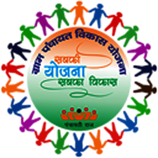
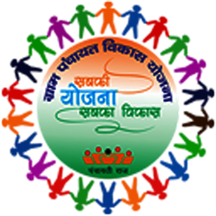

The history of the Panchayati Raj system in Arunachal Pradesh dates back to 1968 when the NEFA Panchayati Raj Regulation was promulgated. This established the three-tier Panchayati Raj system:
- Gram Panchayats: Elected by traditional tribal customs.
- Zilla Parishad: Elected by secret ballot.
 
